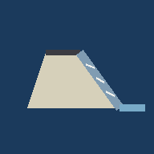

塩田川 その4 左岸 完成形
読み込み中…
現地合わせ
計測
AR
表示
部品の表示
全部出す
全部消す
透過
完成形の面
100
構造物
100
面を透かすと、基礎・均し・根固めなど中の構造が見えます。
測点でスライス
断面を出す
測点
—
厚み
2.0m
現況測点（成果簿）で表示します。設計追加距離も併記します。
測点ラベル
杭の位置と名前を出す
設計中心線を出す
★AR基準点（赤いポールと名前）を出す
現地合わせ中は、立っている点のポールだけ自動で隠れます。
AR（実寸）で使うモデル
全体（既定）
★天端で置く（datum 8.20）
★水際で置く（datum 5.50）
Quick Look は ★モデルの一番低い所を「検出した床」に乗せます。 だから
置く床の標高＝モデルの最下端
にした版を用意しました。 ★どの版にも 各基準点に
ピンクの合わせ十字
（腕 ±1.0 m・AR1 は ±1.5 m）が入っています。
十字の交点
を鋲に重ねてください。腕は 設計中心線の 測点方向／直角方向 を向いています。
天端で置く
…天端まわりの地面（現況 8.1〜8.7 m）に立つとき。天端・法肩・縦帯・階段・横帯が見えます。
水際で置く
…法尻まわりの低い所（現況 5.3〜6.0 m）に立つとき。 ★張ブロック・根固め・かごマットまで見えます（基礎・均しは埋設なので出ません）。
全体
…高さは合いません（天端が 4〜5 m 頭上）。形だけ見るとき。
印刷（PC 向け）
この画面を印刷
情報の表を付ける
いま見えている画面をそのまま A4 横で印刷します。 表示中の部品・断面位置・座標系・日時が表に入ります。PDF 保存もできます。
座標系

現地合わせ
立っている点
カメラの高さ
m（★杭の頭から カメラのレンズまで）
狙う点
十字に重ねて記録
やり直す
終了
方位
0.00°
画角
60°
ルーペ
倍率
2
3
5
8
記録 0 点
基準点の標高（現地実測値を入れる）
保存
計画値に戻す
この端末に保存されます。杭の頭の標高を入れてください。
基準の杭
① 足元に合わせる
② 向きを合わせる
回転
0°
高さ
0.00
床を映して輪郭が出たら「① 足元に合わせる」を押してください。
★「基準の杭」で AR1〜AR10（鋲）を選べます。 その鋲の上に輪郭を出して ① を押し、別の鋲に向けて ② を押すと 座標どおりに置けます。 高さは「高さ」スライダーで合わせます（★Quick Look と違い 下端基準ではありません）。
読み込み中…